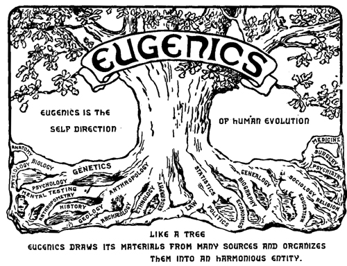
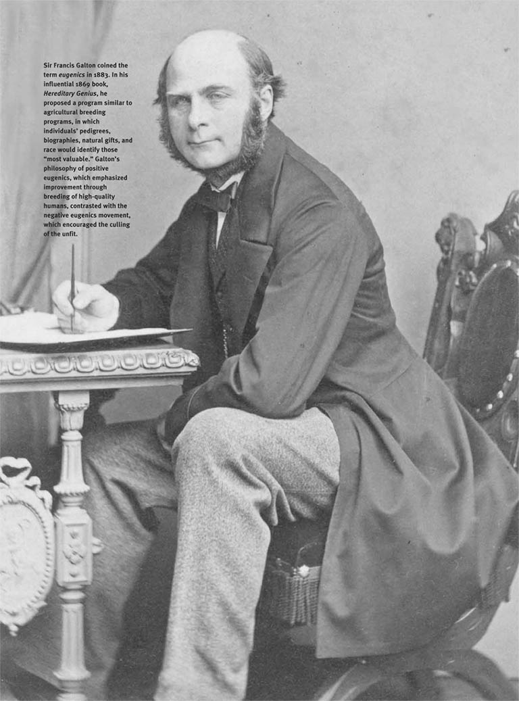
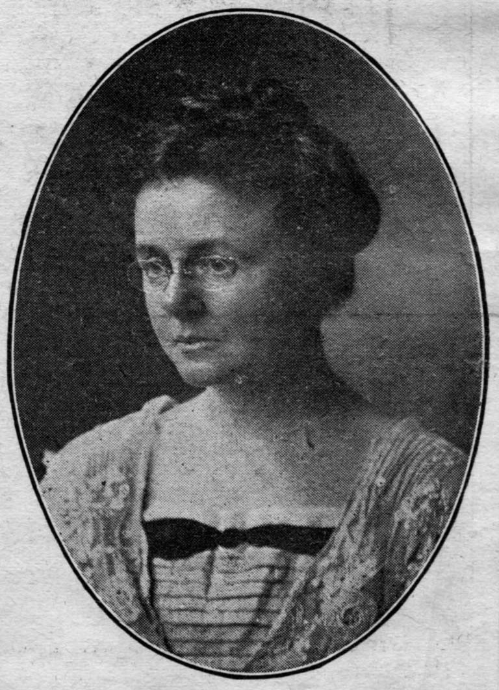
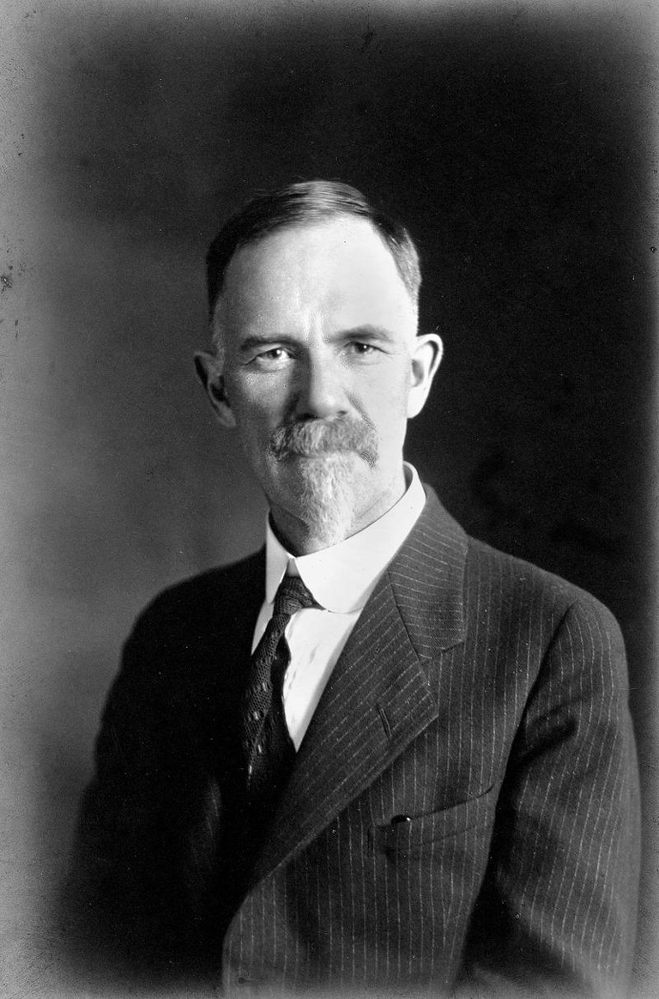
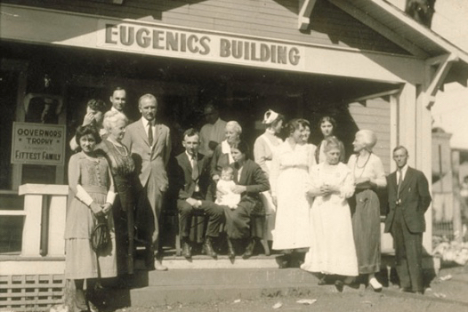

Why is the Canadian flag upside-down?

"The National Flag should never:
...
be flown upside down (except as a signal of distress in instances of extreme danger to life)"
- Government of Canada





The Government of Canada, in its 159-year history, and the French and British colonial empires before it, are no strangers to genocide; “acts committed with intent to destroy, in whole or in part, a national, ethnical, racial or religious group.” (United Nations). Today, most Canadians have become familiar with the history of residential schools, forced displacement, segregation, and the high levels of violence directed at Indigenous women. But few are familiar with the history of forced, coerced or compulsory sterilization; a history that continues into the present day across the country and originated in the modern Eugenics movement.
Eugenics is a set of beliefs and practices aimed at improving the human population through controlled breeding.
It includes “negative” eugenics, which discourages or limits the procreation of people considered to have undesirable characteristics or genes, and “positive” eugenics, which encourages the procreation of people considered to have desirable characteristics and genes
(The Canadian Encyclopedia)
Eugenics is the scientifically inaccurate theory that humans can be improved through selective breeding of populations.
Eugenicists believed in a prejudiced and incorrect understanding of Mendelian genetics that claimed abstract human qualities, such as intelligence and social behavior, were inherited in a simple fashion. Similarly, they believed complex diseases and disorders were solely the outcome of genetic inheritance.
(National Human Genome Research Institute)
Eugenic policies were once considered progressive among many Canadian psychiatrists, philosophers, socialists and feminists. There existed a growing assumption that Canadian society could be improved by encouraging reproduction among certain groups, particularly Anglo-Saxon Protestants, and discouraging or limiting reproduction among other groups. At first, eastern European immigrants were the main target, and Indigenous people became an increasingly common target over time.
Many prominent Canadians of that era were advocates of eugenics philosophy and sterilization, including Dr. E.W. McBride, Professor Carrie Derick and Dr. Helen MacMurchy.
Support for eugenic sterilization was also expressed in the 1920s by many prominent Alberta women, including Emily Murphy and Nellie McClung. Maternal feminists like McClung, for example, argued that women were the mothers and guardians of their “race.” They therefore championed legislation, including sterilization, which aimed to curtail prostitution, alcoholism and “mental defectiveness.”
(The Canadian Encyclopedia)
(Canada's History)
In 1928 and 1933, Alberta and then British Columbia passed sexual sterilization laws. Other countries that passed similar legislation around the same time included Nazi Germany.
In each province, a Eugenics Board was created with the power to authorize the sexual sterilization of certain individuals who had been institutionalized for mental diseases or deemed "defective".
Other provinces, including Saskatchewan, Manitoba and Ontario all drafted sexual sterilization legislation, but were never adopted.
Indigenous populations have been disproportionately targeted by sexual sterilization legislation since the 1930s. By 1972, First Nations and Métis people represented over 25 percent of those sterilized under Alberta’s sexual sterilization legislation.
According to Karen Stote, author of An Act of Genocide: Colonialism and the Sterilization of Aboriginal Women, about 1,200 Indigenous women were sterilized in the 1970s alone, about half of them in racially segregated Indian Hospitals between 1971 and 1974, despite Alberta and British Columbia’s sexual sterilization laws being repealed in 1972 and 1973.
(The Canadian Encyclopedia)
Coerced sterilization and abortion have continued into the 21st century across Canada, especially within the provinces of Saskatchewan and Québec.
Tactics, used by both healthcare professionals and child and family services since the 1970s include:
More and more Indigenous women, and family members on their behalf, are stepping forward to share their experiences of sterilization by the government.
In September 2022, UQAT (Université du Québec en Abitibi-Témiscamingue) released a detailed research report on free and informed consent and imposed sterilizations among First Nations and Inuit women in Québec, the first official study on the subject in the province.
Lawyers such as Alisa Lombard in Saskatchewan are currently leading class action lawsuits on behalf of these women against the state.
An act to amend the Criminal Code, Bill S-228, is currently being considered by the House of Commons. This Bill, put forth by Senator Yvonne Boyer, clarifies the sterilization of persons without their consent as a form of aggravated assault. If amended, convicted health practitioners could serve up to fourteen years in prison.
For more information, please consult our Interactive Map for details on specific incidents.
Why is the Canadian flag upside-down?
"The National Flag should never:
...
be flown upside down (except as a signal of distress in instances of extreme danger to life)"
- Government of Canada